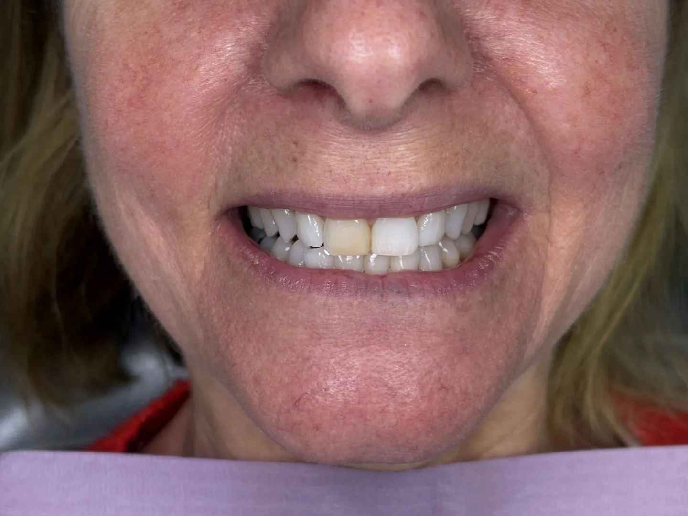

Are veneers right for you?
If you are in good oral health and your teeth do not have significant damage, you may be a good candidate. Larger alignment problems may be better handled first. An exam will tell us.
Cosmetic dentistry
Thin, custom porcelain shells that reshape and brighten your front teeth, planned with you before any tooth is touched.

What they are
Porcelain veneers are thin, tooth-colored shells bonded to the front of your teeth. They can change the shade, size, shape and length of a tooth, and they are made in a dental lab to look like real enamel.
Veneers are often used to correct discoloration, gaps, mild misalignment, worn or eroded enamel, chips and cracks, and teeth that look too small, long, short, round or sharp. In some cases they can stand in for a longer course of orthodontics, or for crowns, whitening or bonding.
Porcelain is stain-resistant and durable. With good care, veneers often last many years.
If you are in good oral health and your teeth do not have significant damage, you may be a good candidate. Larger alignment problems may be better handled first. An exam will tell us.
Traditional vs. no-prep veneers compares the two approaches, and what happens to teeth under veneers explains what to expect for the tooth beneath.
The process
Dr. Kwon or Dr. Park examines your teeth and gums and takes X-rays. Veneers cannot be bonded to teeth with active oral health problems, so any needed care comes first.
We plan the shape and shade with you, using a digital preview and a shade guide so the porcelain matches your natural teeth.
Under local anesthetic, a thin layer of enamel, about half a millimeter, is removed from the teeth receiving veneers. This makes room so the veneers do not stick out.
Impressions guide the lab that makes your veneers. Temporary veneers protect your teeth in the meantime.
We check the fit and color of your final veneers, then bond them to your enamel.
Veneers are stain-resistant and durable, but they can still chip, crack or stain if they are not looked after. Brush twice a day with fluoride toothpaste and floss once a day, and keep your cleanings every six months to remove plaque and stain buildup.
Limit staining foods and drinks, and avoid smoking. If you grind your teeth, wear a night guard. Skip hard, crunchy or sticky foods, and never use your teeth as tools.
Real patients
Common questions
Thin, tooth-colored shells made in a lab and bonded to the front of your teeth to improve their color, shape and size.
Porcelain veneers often last many years with good care. Grinding, hard foods and missed cleanings shorten their life, and they may eventually need replacing.
In most cases a thin layer of enamel is removed to place them, and enamel does not grow back. That is why we plan carefully and talk through your options first. Minimal-prep veneers remove less.
That is the goal. Porcelain reflects light much like enamel, and the shade, shape and size are matched to your face and your other teeth.
They can hide mild crowding, gaps and uneven edges. Larger alignment problems may be better handled with clear aligners or other treatment first. An exam will tell us.
It depends on which teeth show when you smile and which ones need correcting. We decide this together at your exam and smile design visit.
Cost depends on how many teeth are treated and the approach we choose. We give you a written estimate before treatment. See insurance and financing.
Three offices
Wondering if veneers are right for you? An exam will tell us.
New York
39 Smith Ave, Rear LL
Mount Kisco, NY 10549
Connecticut
70 Maple St
Kent, CT 06757
Connecticut
800 E Main St
Stamford, CT 06902
Open Saturdays. Complimentary parking on site.